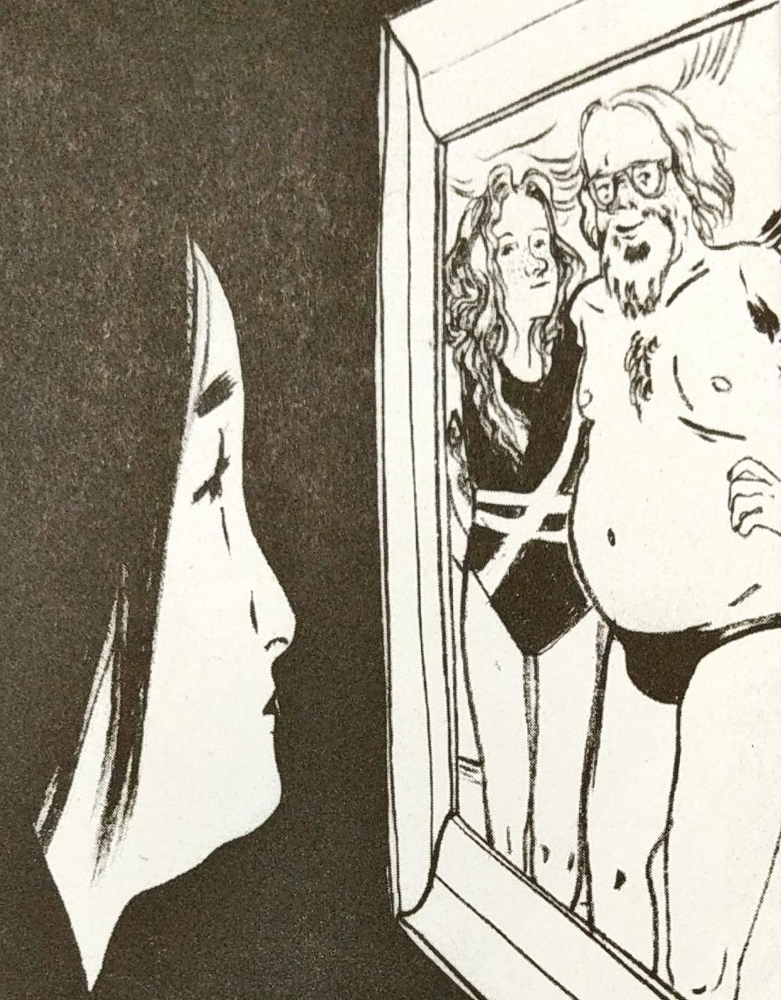

Student, Witch
Toronto, Canada
April 3, 1977
5 months ago
The times are changing
Today was the first day Lisa and I saw each other since I broke my arm. Lisa and I are both practitioners of Wicca, but we have a lot to do before we're true witches. I sure do hope things look up for me from here on out.
4 months ago
My altar.
I'm getting better at witchcraft. Or at least, more into it. I picked up another pack of Tarot cards so that I can give them to someone when they leave, and will have an extra deck. If anyone knows a good place to get pentacles... like a lot of them cheap, let me know!!
3 months ago
...
Lisa and I decided to dress up like witches for halloween. Lisa hasn’t been talking to me lately, but I think she’s come around. She has the suspicion that there is something between Ms. Archer and I, but I also think that she doesn’t fully believe it either. Speaking of Ms. Archer, she was dressed as a fortune teller. We decided to go and talk to some spirits after school.
🔒PRIVATE POST - 3 months ago
Ms. Archer is actually the best teacher in the school. She is always so nice and warm. While Mrs. Hornet thought I would off myself or something, Ms. Archer accepted me for who I really was. She also makes time to listen to me. It's really nice to have someone I can really be open to.
3 months ago
I feel kind of strange. But strange in a good way. Like my heart feels heavy but also pleasant. I'm not sure what's going on. I don't think I can tell Lisa about this though, she wouldn't understand. I don't think I can tell anyone...
2 months ago
Do we really need this club. 😒
Today some girls put up a memorial for Katie and John. They call themselves GCL(the Girls Celebrate Life) club. Julie Peters, Katie’s best friend is the head of the club; although all of Katie’s friends were excited about it, Katie seemed unhappy. I wonder why. As usual Lisa hates Julie Peters and her friends.
2 months ago
hehe look what I found
I was over at Ms. Archer's house today, she had a picture and it looks like she hasn't even aged a day. It was quite nice, but it totally seems like she's moving.
1 months ago
Relationships are complicated and although I know feelings change and people leave... I really can't accept it.
1 months ago
Is it just me or is the point of parents to bother you about something every single hour of your life.
(on a side note: where is a good place to get some peace and quiet?)
1 month ago
I don't know what to think anymore... life sucks.
23 days ago
...
You know that feeling when you just don't want to talk to some people, but you are forced to anyways...?
I'm still working on mastering avoidance.
19 days ago
Did you know that Katie's actually really cool?!!!
Katie is slowly opening up to me about what's going on with her. She seems to trust me and I want to become a friend she can talk to about her issues unlike those GCL girls who are pressuring her.
Shared with specific people - 11 days ago
Katie was unhappy at the dance, so I went to comfort her and she told me she didn't want to be surrounded by those GCL girls because she felt like she was being pressured. Those girls think they know everything about Katie...well they don't! Those GCL girls are using John's death as a portal for their own personal vendetta.
17 hours ago

Katie and I really bonded after that dumb fundraiser dance. She always comes over to my house to hang out. She says she like my house because it helps her be calm and she also likes to hang out with me. I think I made a brand new friendship, a better one, one where Katie actually appreciates me, unlike Lisa who is busy with her new group of friends and her boyfriend. 😊
Upcoming Events:
Performance at crow's theatre - Goodnight Desdemona (Good Morning Juliet)
Friday 15:00
Friend Request
AD: